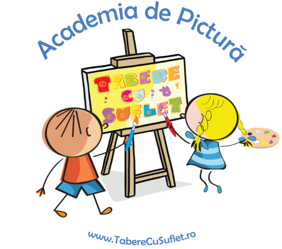

/ Tabere Vara / Academia de Pictura
/ Tabere Vara / Academia de Pictura

Cand mergem? 30 august - 4 septembrie 2026
Unde stam? Breaza, Casa Anuta Detalii cazare
Ce facem? De dimineata pictam, iar dupa-amiaza facem diferite activitati interactive.
Vom lucra cu cei dornici de toate varstele.
Vom face schite de peisaj lucrate in aer liber, experimentand tehnica tus-penita si desen carbune pe hartie/carton, de asemenea vom picta in tehnica acuarelei, dupa peisaj. Lectiile vor fi sustinute de D-na Profesoara Angelica Alexa de la Scoala de Arte.
Dupa-amiaza vom face mici drumetii, ne vom catara, vom juca Battlefield si alte jocuri in aer liber.
Seara este dedicata activitatilor interactive, jucam Dixit, Mafia, ne pregatim de finala Talent Show si ascultam Povesti:)
Daca vreti sa revedeti pozele din anii trecuti: 2018 | 2019 | 2020 | 2021 | 2022 | 2023 | 2024 | 2025
Vezi detalii tabara
Varsta recomandata: Sunt bineveniti copiii dornici sa picteze, cu varste cuprinse intre 9 si 18 ani:)
Cat costa? Contributia pentru aceasta tabara este de 450 Euro.
In cazul in care doriti sa participati insa, din diferite motive, nu puteti acoperi aceasta contributie, va rugam sa ne spuneti si va ajutam cu drag prin programele WeCare. Mai multe detalii
Ce asiguram? Cazare Pensiune 3*, 3 mese, gustari intre mese, lectii de Pictura, pensule, culori si alte materiale pictura, supraveghere copii, activitati interactive, jocuri si multa voie buna:)
Transportul din Bucuresti pana la locul de desfasurare al Taberei este oferit de catre Asociatia Tabere cu Suflet, in limita locurilor disponibile.
Cum rezerv? Inscrierea se poate face aici.
Rezervarea devine ferma dupa plata unui avans de minim 1000 lei. Avansul este nereturnabil. Plata se poate face cash sau in Contul Asociatiei.
La detalii plata va rugam sa treceti "Contract Sponsorizare".
Dupa ce faceti plata, va rugam sa ne confirmati printr-un simplu email.
Contractul se gaseste aici. Pentru validarea inscrierii, va rugam sa il completati si sa ni-l transmiteti.
Oferte: Membrii Asociatiei pot beneficia de mai multe Oferte si Oportunitati. Mai multe detalii
Functie de momentul platii, se acorda diferite reduceri:
• Reducere 12% pentru plata unui avans cu 3 luni inainte de inceperea taberei, prin programul Early Booking EB12
• Reducere 8% pentru plata unui avans cu 2 luni inainte de inceperea taberei, prin programul Early Booking EB8
• De asemenea, in cazul platii avansului cu doua saptamani inainte de inceperea tabarei, contributia se majoreaza cu 5%, iar in cazul platii avansului in ultima saptamana, majorarea este de 10%. Mai multe detalii
Nu mai pot veni: In cazul mai putin fericit in care nu mai puteti veni in Tabara, prin activarea Optiunii Nu-Mai-Pot-Veni contributia se poate recupera integral. Mai multe detalii
Sa ne cunoastem: Tabere cu Suflet este o Familie extinsa, in care impartasim aceleasi Valori. Ne-ar face placere sa facem cunostinta inainte de tabara si sa va povestim despre aceste Valori:)
In plus, Tabara nu poate avea loc fara Incredere, de aceea este important sa ne cunoastem si sa construim impreuna Puntea Increderii. Pentru a facilita acest lucru am creat mai multe oportunitati. Mai multe detalii
Asociatia Tabere cu Suflet: Aceasta tabara este deschisa exclusiv pentru membrii Asociatiei Tabere cu Suflet.
Daca nu sunteti membru si doriti sa deveniti, va rugam sa consultati Conditiile de Aderare, apoi sa completati Formularul de Inscriere si sa semnati Cererea de Adeziune.
WeCare: Prin achitarea integrala a contributiei, puteti ajuta un copil fara posibilitati materiale sa vina gratuit in tabere, 10% din costul total al taberei fiind directionat catre programul WeCare Zambet pentru toti Copiii. Mai multe detalii